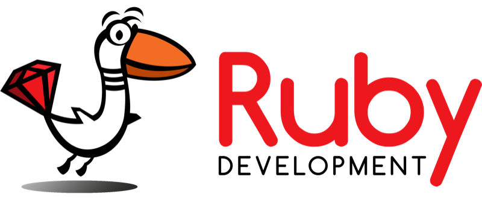
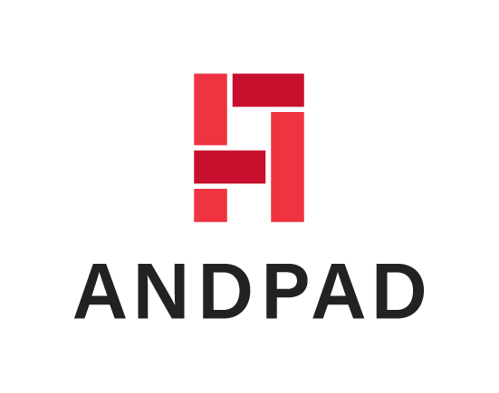

参加者募集
Call for Attendees
チケットの販売を開始しました。
Rubyistたちの熱い♥を、ぜひ受け取りにきてください！！
#03
2026.11.21 開催！
THEME
16年ぶりに仙台で地域Ruby会議を開催するにあたり、Rubyistに向けてはもちろん、
まだRubyに触れていない人たちにもその楽しさを知って欲しい気持ちで
「rubyist.send(:❤️)」というテーマを定めました。
皆さんのとっておきの❤️をぜひ披露していただきたいです。
NEWS
スポンサー・登壇者・参加者を順次募集予定です。最新情報は公式Xでもお知らせします。
TIMETABLE
OVERVIEW / ACCESS
SPONSORS
仙台Ruby会議 #03を支えてくださるスポンサーの皆様です。
hacomonoは、ウェルネス産業向けに入会・予約・決済・会員管理をデジタル化するVertical SaaS企業です。ジュニアスクールから公共施設まで幅広い業態を支援し、全国13,000店舗以上に導入される産業インフラへ成長しています。2025年1月にシリーズDで46億円を調達し、累計120億円に到達。現在はFinTechやIoT×AIなど6つの戦略領域に投資しています。

株式会社Ruby開発は「Ruby×革新技術で豊かな未来を拓く」をミッションに、Ruby on Railsの受託開発と医療・介護分野の自社サービス開発を手がけています。AIを極限まで使い倒し、要件定義から開発・運用までを一気通貫でリード。Rubyコミッター2名が在籍し、Railsの実務経験を“顧客に価値を届ける力”に変えるForward Deployed Engineer（FDE）が活躍しています。

ANDPADは現場効率化から業務改善まで一元管理できるクラウド型建設プロジェクト管理プラットフォームです。26万社、69万人の毎日を支え業界のDX/AI化を加速しています。多くのプロダクトでRuby/Railsを採用しており、Ruby/Railsが建設業界を支えています。アンドパッドではAIにも果敢に挑戦し新しいユーザー体験を提供できるRubyistを歓迎します！

株式会社movは、「日本のポテンシャルを最大化する」を使命に掲げ、「インバウンド事業」と「店舗支援事業」の2つの事業を展開しています。活気のある日本を取り戻すために、日本の市場、企業、コンテンツを支援し続ける会社です。実直なコンサルティングと、Ruby on Railsを軸にしたプロダクト開発により、着実な成長を遂げています。
Gaji-Laboは、スタートアップや事業会社のプロダクトチーム支援を専門にしています。UIデザイン、フロントエンド開発、プロダクトマネジメントの専門性を持ったメンバーが、チームの一員としてプロダクトの成長を支援します。急成長期や混乱期は、人手を増やすだけでは乗り越えることができません。専門家としてのスキルを持ち、改善に向けてチームワークを高められるメンバーが必要になったときにご相談ください。
株式会社ケーシーエスキャロットは、組込みからWebまで手がける独立系ソフトウェアハウスです。仙台Ruby会議03には弊社の仙台メンバーも実行委員として参加しています。リモートで一緒に働く仲間を募集しています。